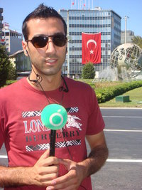

|

|
|
زينا مينا
|
|
|
من النادر في أنديتنا اللبنانية وجود إداريات يمتلكن مواهب فنّية على مختلف الأصعدة
تخوّلهن الجلوس على مقعد المسؤولية نظراَ لصعوبة العمل الرّياضي والضغط النفسي في هذا
المجال. فكيف إذا كان الجنس اللطيف ليس فقط إدارياَ بل مساعداَ ومستشاراَ للوزير في
وزارة الشباب والرّياضة. إنّها السيدة زينا مينا المرأة المفعمة بالنّشاط والحيوية
تجاه التقدّم المستمرّ في الرّياضة بشكل عام ورياضة ألعاب القوى بشكل خاص كونها إبنة
هذه اللعبة التي أتقنتها ما بين لعبها وتدريبها. سيّدة المعهد الأنطوني والمستشارة
للوزير فتفت جلست أمامنا على مدى 45 دقيقة لتتلقى كمّاَ هائلاَ من الأسئلة التي فشلت
في إرباكها بل على العكس من ذلك أتحفتنا بمعلومات ومعلومات، فلكم ما جاء في حديثنا
الشيّق من سيم وجيم.
• ما هو موقعك في وزارة الشباب والرّياضة وفي نادي الأنطوني؟
أنا مستشارة الوزير بالوزارة، ومسؤولة رياضية وعن الأمور الفنيّة في نادي الأنطونية
ومدرّبة ألعاب قوى كما أنّني أشرف على الفرق المدرسية.
• كيف هي علاقتك مع الإتّحادات؟
لا مشاكل معهم، ولكن هناك شدّ حبال مع إتّحاد ألعاب القوى. أنا أطالب بتحضير المنتخبات
في اللقاءات الخارجية،هذا الطاقم الموجود خدم عسكريته ويجب وجود عنصر الشباب في الإتّحاد.
• هل يهتمّ الوزير بالشّق الرّياضي؟
هو لا يتواجد في الوزارة ولكنّه دائم الإطّلاع على الأوضاع الرّياضية من خلال الإجتماعات
الدورية التي تحصل معه في السراي الحكومي.
• إذا أردنا تأهيل الوضع الرّياضي من أين ننطلق؟
يجب البدء من تلامذة المدارس عن عمر 6 سنوات لتؤهّل لاعبين للمستقبل.
• ما هو مدى الإهتمام الرّياضي في المدارس؟
بداية يجب أن نرى النوعية،لقد بدأ إختصاص التربية البدنية والرّياضة منذ عشر سنوات
في الجامعة اللبنانية والأنطونية والبلمند، وسيدة اللويزة حديثاَ.
كانت حصّة الرّياضة في المدارس تأخذ طابع الرّاحة بينما اليوم لهذه المادّة أهمية للناحية
الإجتماعية والثقافية. إضافة إلى أنّ أستاذ التربية البدنية تحصّلت حقوقه كونه أصبح
مثل أستاذ الرّياضيات والفيزياء. ما زال النقص واضحاَ في المدارس وخاصّة الرسمية منها،
كذلك يجب وضع مادّة الرّياضة في الإمتحانات الرّسمية وهذا مكلف جدّاَ للدّولة. أعطيك
مثلاَ في البلاد المتقدّمة يأخذ الوالد إبنه إلى التمرين في رياضة معيّنة قبل وبعد
دوام المدرسة على حسابه الخاص مقابل تخفيض الضرائب على راتبه كذلك بعد انتهاء المرحلة
المدرسية يخصم من قسط التلميذ في الجامعة.
• ما كان موقف نادي الأنطوني من إنتخابات كرة السلّة؟
لم نشارك في الإقتراع كون اللجنة الإدارية كانت مسافرة. أنا أرحّب بالأعضاء الجدد في
الإتّحاد وأعتبر بيار كاخيا في الموقع المناسب نظراَ لعلاقاته الممتازة.
• ما عدد الألعاب المرخص لها في النّادي؟
كرة السلّة،كرة الطائرة،ألعاب قوى،بينغ بونغ،جودو،كونغ فو وتاي بوكسينغ.
• مجرّد المشاركة في بطولة لبنان لكرة السلّة في الدّرجة الأولى كان قراراَ شجاعاّ،
كيف تمّ اتّخاذ هذا القرار؟
نحن لم نضع سياسة للصعود إلى الدرجة الممتازة لقد صعدنا بالصدفة (ضاحكة) أردنا تحقيق
حلم اللاّعبون وهذا ما حصل. إضافة إلى أنّ الميزانية كانت من إنتاج الأنطونية ولم نستطع
الحصول على sponser بحيث اقترحنا على عدّة مصارف هذا الموضوع ولكن كلّ المحاولات فشلت
كما أنّ الآباء يساعدون التلامذة في دفع أقساطهم السنوية.
• وعن إمكانية تكرار تجربة الدرجة الأولى؟
يمكن أن نكرّرها كون قضاء بعبدا انتعش كلّه، أعطيك مثلاَ في مباراة ضدّ الرّياضي حيث
أمل الفوز معدوم لا ترى مقعداَ شاغراَ في الملعب كما كان دخول الجمهور إلى الملعب مجانيّاَ.
• هل استبعد إيلي نصر عن مهمّة التدريب أم كان القرار ذاتياَ؟
كان قراره ذاتياَ،لقد نجح في مهمّته ضمن إطار الميزانية الضعيفة، لا يمكن أن يقدّم
أكثر من ذلك في هذه الإمكانيات كما انّنا لم نتوفّق في الأجانب بالإضافة لإصابة قائد
الفريق.
• من هو بديل إيلي نصر؟
مبدئياَ جورج كلزي.
• وعن موضوع الإستغناءات؟
ميشال حكيم أخذ استغنأه، أنيس فغالي آخر لاعب يأخذ استغنائه.
• كلمة أخيرة؟
أحب أن ألفت النظر إلى موضوع اللاّعبين الناشئين في ألعاب القوى، أخذ أحدهم المركز
الثالث ولم يذكر إسمه في الجريدة كما تأهّلوا إلى بطولة العالم ولم يسمع احد بهم في
حين أنّ منتخب كرة السلّة لم يتأهل وأقيم له طنّة ورنّة وشكراَ لك.
مايك شلهوب
|
|